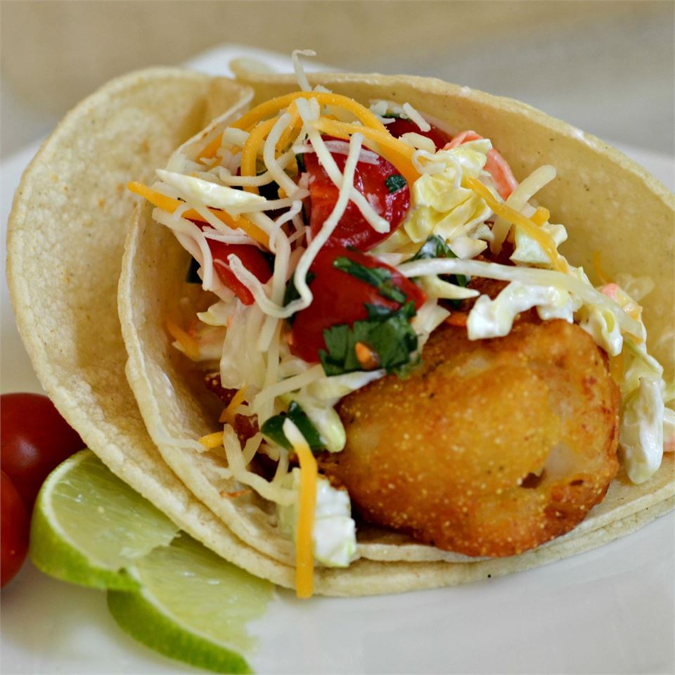

Baja Style Fish Tacos

The "Athentically Inspired" Recipe
The chef was inspired by authentic fish tacos she enjoyed on the streets of Ensenada, Mexico. These savory treats will have you enjoying the true experience of Mexican cuisine without any long travel times!
Ingredients
recipe serves 12
- 6 tomatoes, diced
- 1 small onion, diced
- 1/2 cup chopped fresh cilantro
- 2 tbsp canned diced jalapeno peppers(juice reserved)
- 1/2 tsp garlic salt
- 1/2 lime, juiced
- 3 cup coleslaw mixed
- 3 tbsp ranch dressing
- 2 cup vegetable oil for frying
- 1 (9oz) box batter mix
- 1 (12oz) can or bottle Mexican beer
- 24 corn tortillas
- 1 lb cod fillets, cut into 2-inch chunks
- 2 cup shredded Mexican cheese blend
- 2 limes, sliced into wedges
- 1 dash chile-garlic sauce (optional)
Steps
- Mix tomatoes, onion, cilantro, jalapeno peppers, 1 tablespoon juice from jalapeno peppers, and garlic salt in a bowl; squeeze 1/2 lime over salsa fresca. Cover bowl with plastic wrap and refrigerate while preparing fish.
- Toss coleslaw mix with ranch dressing in a bowl; set aside for flavors to blend.
- Heat oil in a deep-fryer or large saucepan to 350 degrees F (175 degrees C).
- Stir batter mix and beer together in a bowl. Wrap corn tortillas in wet paper towels and set aside.
- Dip cod in the batter mix; fry coated cod in batches in the hot oil until cod is cooked through and coating is brown, 4 to 5 minutes. Remove cod with a slotted spoon and drain on a paper towel-lined plate.
- Microwave corn tortillas on high until warmed, about 1 minute.
- Stack two tortillas on a plate; top with fish, a sprinkle of Mexican cheese, coleslaw mixture, salsa fresca, and a squeeze from lime wedge. Drizzle with chile-garlic sauce. Repeat with remaining ingredients.